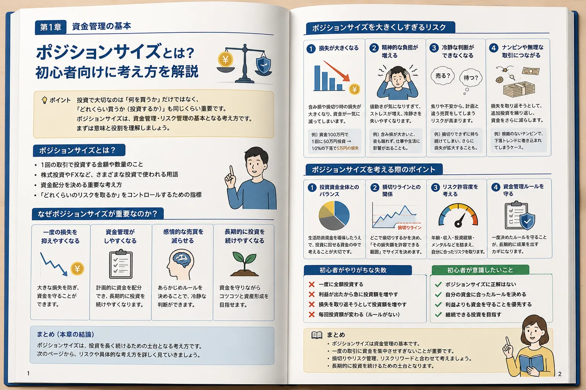

Introduction
「何を買うか」と同じくらい「どれくらい買うか」が大切
投資では、銘柄選びやエントリータイミングに目が向きやすいものです。しかし、同じ銘柄を買っても、少額で買う場合と資金の大半を使って買う場合では、損失が出たときの影響が大きく変わります。

買う対象
何を買うか
株式、投資信託、FX、ETFなど、投資対象を選ぶ視点です。
資金配分
どれくらい買うか
1回の取引に使う金額や数量を決める視点です。これがポジションサイズの考え方です。
目的
続けられる投資にする
利益だけでなく、損失が出たときに資金と判断力を守ることが大切です。
Meaning
ポジションサイズとは？
ポジションサイズとは、1回の取引で投資する金額や数量のことです。株式投資では「何株買うか」、FXでは「何通貨・何ロット取引するか」といった形で考えます。
株式投資での例
同じ銘柄を買う場合でも、1株だけ買うのか、100株買うのか、資金の大半を使うのかでリスクは変わります。値動きの方向だけでなく、保有数量も結果に影響します。
FXでの例
FXでは取引数量が大きくなるほど、為替が少し動いただけでも損益が大きくなります。レバレッジを使えるため、初心者ほど数量を大きくしすぎない意識が重要です。
資金配分を決める考え方
ポジションサイズは「たくさん買えばよい」という話ではありません。自分の投資資金、損切りライン、リスク許容度に合わせて、無理のない範囲を考えるためのものです。
Importance
なぜポジションサイズが重要なのか？
ポジションサイズを意識すると、一度の損失を抑えやすくなり、資金管理もしやすくなります。また、損益の振れ幅が大きすぎないため、感情的な売買を減らしやすくなります。
一度の損失を抑えやすい
取引数量が小さければ、予想と反対に動いたときの損失も抑えやすくなります。資金を一度に大きく減らさないことは、投資を続けるうえで大切です。
資金管理がしやすい
1回の取引に使う金額を決めておくと、残りの資金や次の取引の余力を把握しやすくなります。
感情的な売買を減らせる
ポジションが大きすぎると、少しの値動きで不安や欲が強くなります。無理のないサイズにすることで、冷静に判断しやすくなります。
長期的に続けやすい
投資は一度の取引で終わりではありません。資金を守りながら経験を積むためにも、継続できるサイズを考えることが重要です。
Risk
ポジションサイズを大きくしすぎるリスク
ポジションサイズを大きくしすぎると、損失額だけでなく心理面にも影響が出ます。初心者ほど「少しなら大丈夫」と考えて大きくしがちですが、冷静な判断を保てるかも重要な判断材料です。
損失が大きくなる
たとえば、同じ5％の下落でも、1万円の投資なら500円の損失、10万円の投資なら5,000円の損失になります。値動きの割合が同じでも、投資金額が大きいほど実際の損失額は大きくなります。
精神的な負担が増える
含み損が大きくなると、チャートを何度も見たり、仕事や生活中も気になったりすることがあります。自分が落ち着いて見られる範囲に収めることも、リスク管理の一部です。
冷静な判断ができなくなる
損失が大きいと、事前に決めた損切りラインを守れなくなることがあります。「少し戻ったら売る」と考えているうちに、判断が遅れる場合もあります。
ナンピンや無理な取引につながる
大きな含み損を抱えると、平均取得単価を下げようとして追加で買い増すことがあります。計画的な分割投資ではなく、損失を取り返すためのナンピンになると、さらに資金が偏りやすくなります。
Point
ポジションサイズを考える際のポイント
ポジションサイズに絶対的な正解はありません。大切なのは、投資資金全体・損切りライン・リスク許容度・資金管理ルールを組み合わせて考えることです。
| 確認ポイント | 考えること | 初心者の見方 |
|---|---|---|
| 投資資金全体とのバランス | 1回の取引に資金を集中させすぎていないか | 余力を残しておくと、急な値動きにも対応しやすい |
| 損切りラインとの関係 | 損切りした場合に、いくら損失になるか | 価格だけでなく、数量を合わせて考える |
| リスク許容度 | 損失が出ても生活や心理に大きく影響しないか | 不安で眠れないサイズは大きすぎる可能性がある |
| 資金管理ルール | 毎回の取引で守る基準を決めているか | 気分で金額を変えすぎないようにする |
※ 横にスクロールできます
- 「何％が正解」と断定できるものではありません。
- 投資資金や生活費、経験、投資期間によって適切なサイズは変わります。
- 迷う場合は、利益の大きさよりも資金を守れるかを優先して考えましょう。
Mistake
初心者がやりがちな失敗
ポジションサイズの失敗は、知識不足だけでなく感情から起こることもあります。特に、利益が出た直後や損失を取り返したい場面では、取引額を急に大きくしやすいため注意が必要です。
失敗例 01
一度に全額投資する
余力を残さず買ってしまうと、下落時に対応しにくくなります。追加投資や損切りの判断も難しくなります。
失敗例 02
利益が出たから急に投資額を増やす
勝ちが続くと自信が大きくなり、普段より大きな取引をしたくなることがあります。成功体験の直後ほどルール確認が必要です。
失敗例 03
損失を取り返そうとして投資額を増やす
損失後に取引額を大きくすると、さらに損失が膨らむ可能性があります。取り返す意識よりも、資金を守る判断が大切です。
失敗例 04
毎回投資額が変わる
理由なく金額や数量が変わると、損益の振れ幅も安定しません。自分なりの基準を作ると振り返りやすくなります。
Mindset
初心者が意識したいこと
ポジションサイズは、利益を最大化するためだけの考え方ではありません。むしろ初心者にとっては、損失を抑え、冷静に続けるための土台として考える方が自然です。
-
ポジションサイズに正解はない
投資資金、生活状況、経験、投資対象によって適切なサイズは変わります。他人の金額をそのまま真似する必要はありません。
-
自分の資金に合ったルールを決める
1回の取引で使う上限、損切り時の最大損失、追加投資する条件などを事前に決めておくと判断がぶれにくくなります。
-
利益よりも資金を守ることを優先する
大きく勝つことよりも、投資を続けられる状態を保つことが大切です。資金が残っていれば、次の機会を待つことができます。
-
継続できる投資を目指す
無理な取引は一時的に利益が出ても、長く続けるのが難しくなります。自分が冷静でいられるサイズを基準にしましょう。
Summary
まとめ｜ポジションサイズは資金管理の基本
ポジションサイズとは、1回の取引で投資する金額や数量のことです。株式投資でもFXでも、資金をどれくらい使うかによって、損失額や心理的な負担は大きく変わります。
- ポジションサイズは資金管理の基本です。
- 一度の取引に資金を集中させすぎないことが重要です。
- 損切りラインやリスクリワードと合わせて考えると整理しやすくなります。
- 長期的に投資を続けるための土台として、無理のないサイズを意識しましょう。
FAQ
ポジションサイズに関するよくある質問
ポジションサイズとは何ですか？
ポジションサイズとは、1回の取引で投資する金額や数量のことです。株式投資では何株買うか、FXでは何通貨・何ロット取引するかといった資金配分に関係します。
初心者はどれくらいの金額で投資すれば良いですか？
一律の正解はありません。生活費や予備資金を除いた余裕資金の範囲で、損失が出ても冷静に判断できる金額から考えることが大切です。
ポジションサイズは毎回同じにするべきですか？
必ず同じにする必要はありません。ただし、毎回感情で大きく変えると資金管理が崩れやすくなるため、投資資金・損切りライン・リスク許容度に合わせたルールを決めておくと管理しやすくなります。
ポジションサイズと資金管理の違いは何ですか？
ポジションサイズは、1回の取引でどれくらい資金を使うかという考え方です。資金管理は、投資資金全体の配分、損失の抑え方、余力の残し方などを含む、より広い考え方です。
ご利用にあたっての注意事項
本記事は情報提供を目的としており、投資の勧誘を目的としたものではありません。株式・投資信託・外国証券・FX等の取引は元本保証がなく、相場変動等により損失が生じる場合があります。取引開始前に、契約締結前交付書面や商品説明書、目論見書等を必ずご確認のうえ、ご自身の判断と責任でお取引ください。